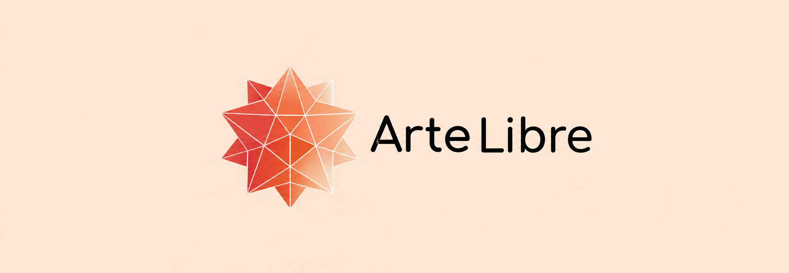
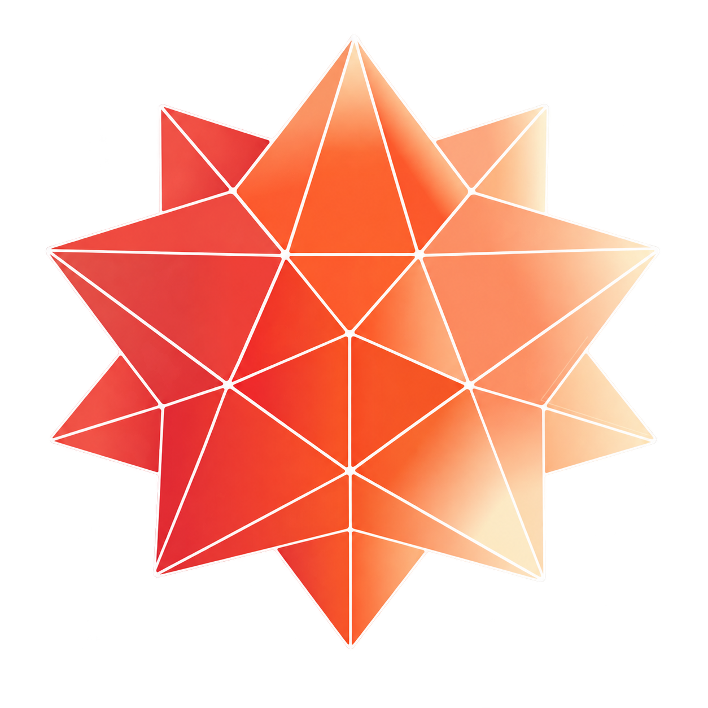
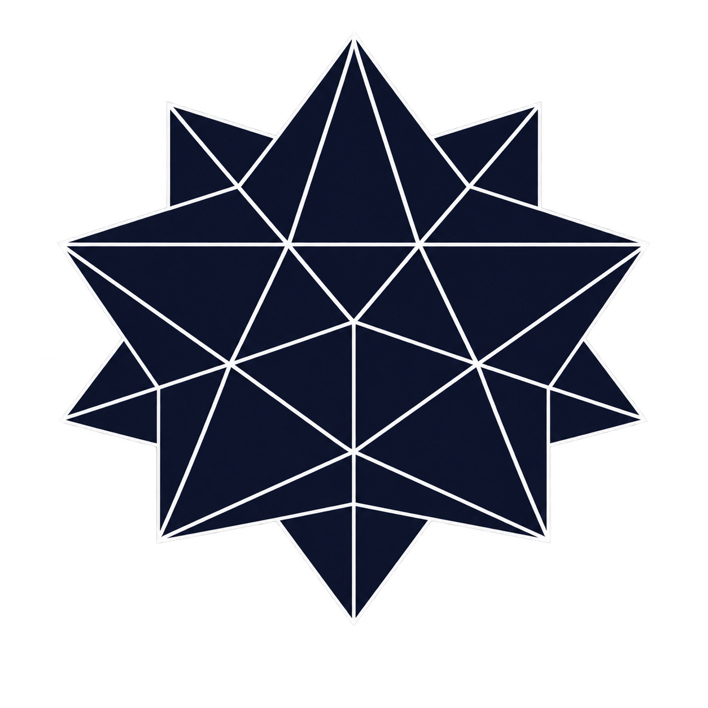

Herramientas para crear.
Un estudio para crecer.
Recursos visuales e inspiración para todos; publicidad digital para negocios.
Que una idea no se quede esperando.
Arte Libre abre dos puertas: una para encontrar, probar y crear imágenes; otra para convertir la comunicación de un negocio en una presencia que se nota.
Crear debería sentirse más conectado.
Hoy, buscar referencias, producir imágenes y comunicar una oferta suele implicar cambiar de herramienta, contexto y ritmo.
Lo que vimos
Quien crea salta entre bancos, generadores y enlaces sin contexto. Quien dirige un negocio también necesita transformar lo que hace en mensajes claros y memorables.
La pregunta
¿Y si descubrir, crear y comunicar pudieran empezar en el mismo lugar?
Por qué existe
Para reducir fricción: recursos abiertos e inspiración con IA en nuestra aplicación, más un estudio que lleva esas posibilidades al terreno comercial.
Hasta dónde llega hoy
Un sitio en español con buscador, Murales moderados y servicios creativos para negocios. La aplicación de escritorio reúne proyectos, equipo e inspiración visual con GenAI.
Anexos
Evidencias que respaldan decisiones del proyecto.
- EntrevistasNecesidades y hábitos.En consolidación
- Gráficos y encuestasResultados de usuarios.En consolidación
- Imagen corporativaGuía visual CTS.Integrado
De la chispa a la presencia.
Hacer que cualquier persona pueda pasar de una referencia a una imagen, y que los negocios puedan convertir esa imagen en comunicación que atrae, explica y vende.
- 01
Reunir fotografías, ilustraciones y vectores que ayuden a empezar con mejor contexto.
- 02
Acercar la creación con IA local para que experimentar no dependa de una barrera técnica.
- 03
Diseñar campañas, anuncios y contenido que ayuden a los negocios a hacerse entendibles y elegibles.
Dar a las ideas una forma visible y a los negocios una forma de avanzar.
Lo hacemos con recursos accesibles, tecnología local y comunicación digital pensada para personas reales.
Ser una plataforma colombiana donde crear sea natural y crecer tenga una voz propia.
Un ecosistema abierto para explorar, expresarse y construir marcas con más claridad.
Cuatro principios. Una experiencia.
Guía visual CTS como guía.
Creativo
Abre caminos cuando la primera respuesta no basta.
Libre
Acerca herramientas sin cerrar la puerta por complejidad.
Inspirador
Invita a mirar una idea desde otro ángulo.
Brillante
Hace que tecnología, intención y memoria trabajen juntas.
Una marca.
Tres expresiones.
Variantes oficiales en alta definición.

Imagotipo
Isotipo y logotipo trabajan juntos para presentar la marca completa.

Isotipo
La figura geométrica concentra energía, creatividad y movimiento.

Isotipo oscuro
Versión sobria para fondos claros y composiciones de alto contraste.
IA local, intención humana.
GenAI vive en nuestra aplicación de escritorio como herramienta de inspiración, sin reemplazar el criterio creativo de cada persona.
Modelo texto-a-imagen destilado para generar en pocos pasos. La aplicación de escritorio lo utiliza para explorar referencias visuales.
- Tarea
- Texto a imagen
- Pasos
- 1
- Orientación
- 0.0
- Licencia
- sai-nc-community
Dos disciplinas.
Una visión compartida.
Desarrollo, análisis y dirección gráfica.
Matias David
Nisperuza Gonzalez
Desarrollador principal de interfaces y analista de datos
Juan David
Cardenas Aveldaño
Director creativo · especialista gráfico
Un proyecto formativo creado en el SENA.
Creatividad, tecnología y acceso responsable.